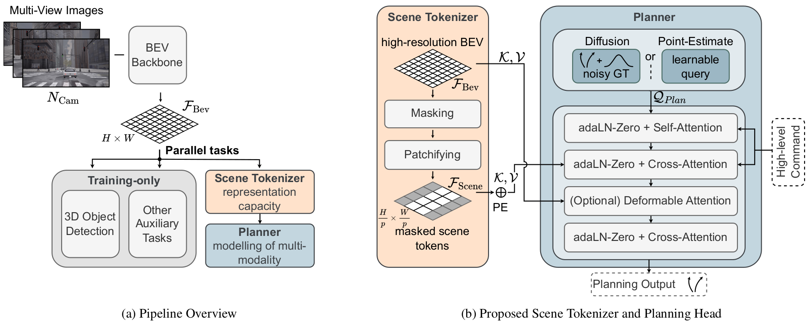
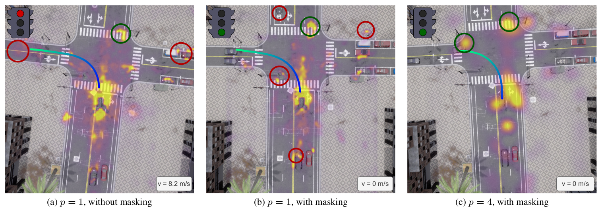
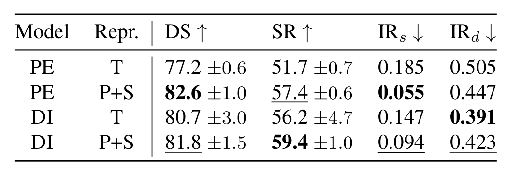
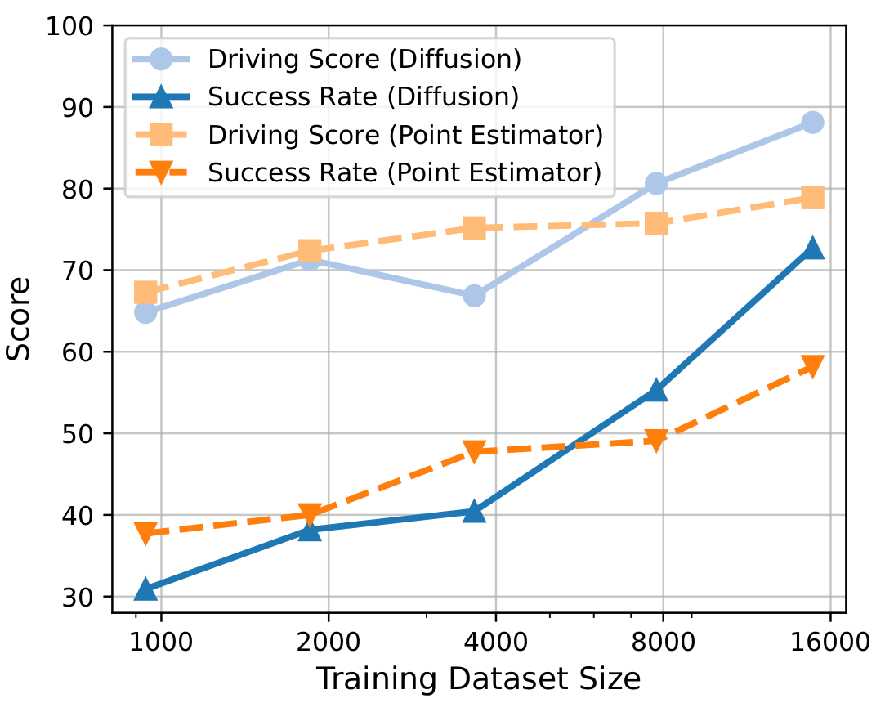

Abstract
End-to-end autonomous driving has gained significant attention for its potential to learn robust behavior in interactive scenarios and scale with data. Popular architectures often build on separate modules for perception and planning connected through latent representations, such as bird's eye view feature grids, to maintain end-to-end differentiability. This paradigm emerged mostly on open-loop datasets, with evaluation focusing not only on driving performance, but also intermediate perception tasks. Unfortunately, architectural advances that excel in open-loop often fail to translate to scalable learning of robust closed-loop driving. In this paper, we systematically re-examine the impact of common architectural patterns on closed-loop performance: (1) high-resolution perceptual representations, (2) disentangled trajectory representations, and (3) generative planning. Crucially, our analysis evaluates the combined impact of these patterns, revealing both unexpected limitations as well as underexplored synergies. Building on these insights, we introduce BevAD, a novel lightweight and highly scalable end-to-end driving architecture. BevAD achieves 72.7% success rate on the Bench2Drive benchmark and demonstrates strong data-scaling behavior using pure imitation learning.

Analysis Framework: Our analysis framework builds upon ParaDrive. (1) We introduce a scene tokenizer to reduce the spatial resolution of the BEV features. (2) The planning head is a transformer decoder, modelling the planning task either by point estimation or by diffusion. The interpretation of the planning queries determines the planner's output representation, which can be a entangled trajectory representation or a disentangled path + velocity representation.

High-Resolution Perceptual Representations Facilitate Overfitting: Our scene tokenizer effectively compresses spatial information and improves robustness in closed-loop driving. Qualitative visualization of the planning queries cross-attention to BEV features confirm: (a) The planner attends to distant BEV cells. Despite strong attention on the traffic light, the autonomous vehicle runs the red light. (b) There are numerous attention spikes to random BEV cells, but barely no attention to the oncoming traffic. (c) The attention map significantly simplifies and exhibits fewer attention outliers.

Comparison of modeling and planning representation: Diffusion-based planners (DI) and disentangled representations (P+S) provide complementary benefits. We find that the disentanglement is favorable for robust steering, while diffusion is beneficial for reducing dynamic infractions.

Diminishing Returns when Scaling Non-Generative Planners: Diffusion demonstrates superior performance over point estimators when scaled with sufficient training data, despite initially underperforming with limited data.
Interactive Viewer
Experience BevAD's closed-loop driving performance through our interactive 3D viewer. Here, we visualize 3D object detections alongside the vehicle's planned path and trajectory.
BibTeX
@article{holtz2026bevad,
title={What Matters for Scalable and Robust Learning in End-to-End Driving Planners?},
author={David Holtz and Niklas Hanselmann and Simon Doll and Marius Cordts and Bernt Schiele},
year={2026},
eprint={2603.15185},
archivePrefix={arXiv},
primaryClass={cs.RO},
url={https://arxiv.org/abs/2603.15185},
}